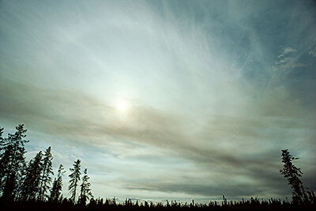
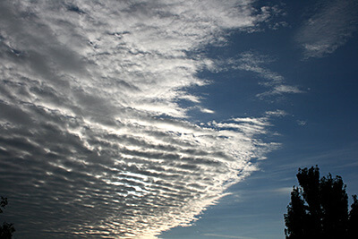
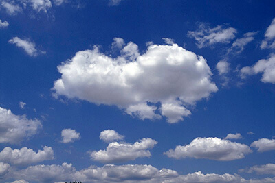

| High Clouds (16,500-45,000 feet) | ||
|---|---|---|

Cirrus clouds are delicate, feathery clouds that are made mostly of ice crystals. Their wispy shape comes from wind currents which twist and spread the ice crystals into strands. Weather prediction: A change is on its way! |

Cirrostratus clouds are thin, white clouds that cover the whole sky like a veil. These clouds are most commonly seen in the winter, and can cause the appearance of a halo around the sun or the moon. Weather prediction: Rain or snow will arrive within 24 hours! |

Cirrocumulus clouds are thin, sometimes patchy, sheet-like clouds. They sometimes look like they're full of ripples or are made of small grains. Weather prediction: Fair, but cold. However, if you live in a tropical region, these clouds could be a sign of an approaching hurricane! |
| Mid-level Clouds (6,500-23,000 feet) | ||
|---|---|---|
| 
Altocumulus clouds have several patchy white or gray layers, and seem to be made up of many small rows of fluffy ripples. They are lower than cirrus clouds, but still quite high. They are made of liquid water, but they don't often produce rain. Weather prediction: Fair |

Altostratus clouds are gray or blue-gray mid-level clouds composed of ice crystals and water droplets. The clouds usually cover the entire sky. Weather prediction: Be prepared for continuous rain or snow! |

Nimbostratus clouds are dark, gray clouds that seem to fade into falling rain or snow. They are so thick that they often blot out the sunlight. Weather prediction: Gloomy with continuous rain or snow |
| Low Clouds (less than 6,500 feet) | ||
|---|---|---|
| 
Cumulus clouds look like fluffy, white cotton balls in the sky. They are beautiful in sunsets, and their varying sizes and shapes can make them fun to observe! Weather prediction: Fair |

Cumulonimbus clouds grow on hot days when warm, wet air rises very high into the sky. From far away, they look like huge mountains or towers. Weather prediction: Look out for rain, hail, and tornadoes! |

Stratocumulus clouds are patchy gray or white clouds that often have a dark honeycomb-like appearance. Weather prediction: Fair weather for now, but a storm might be on its way. |

Stratus clouds often look like thin, white sheets covering the whole sky. Since they are so thin, they seldom produce much rain or snow. Sometimes, in the mountains or hills, these clouds appear to be fog. Weather prediction: Fair, but gloomy |
||
The GOES-16 (Geostationary Operational Environmental Satellite-16) satellite can watch clouds with a new instrument called the Advanced Baseline Imager, or ABI for short. Scientists have found that rapid growth and cooling at the tops of clouds are indicators of the potential for severe weather. The ABI can show more detailed changes in cloud-top features, helping scientists assess the potential size and severity of a storm even before it reaches its peak! Scientists use data from GOES-R series satellites, along with data from NASA's CloudSat Mission to study cloud properties.